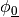
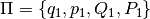
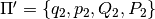
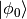
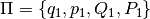
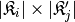
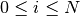

GaussianIntegral¶
About the GaussianIntegral class¶
The WaveBlocks Project
@author: R. Bourquin @copyright: Copyright (C) 2010, 2011, 2012, 2013, 2014 R. Bourquin @license: Modified BSD License
Inheritance diagram¶
Class documentation¶
- class WaveBlocksND.GaussianIntegral(*unused, **kunused)¶
- exact_result_gauss(Pibra, Piket, D, eps)¶
Compute the overlap integral of the groundstate  by using the symbolic formula:
In a first step we combine the exponential parts of both wavepackets into . Then we transform
 ,
,  and
and  such that this matches the integrand above. The necessary transformations read:
such that this matches the integrand above. The necessary transformations read:Note that this is an internal method and usually there is no reason to call it from outside.
Parameters: - Pibra – The parameter set  of the bra
 .
. - Piket – The parameter set  of the ket .
- D – The space dimension
 the packets have.
the packets have. - eps – The semi-classical scaling parameter
 .
.
Returns: The value of the integral .
- Pibra – The parameter set  of the bra
- get_description()¶
Return a description of this integral object. A description is a dict containing all key-value pairs necessary to reconstruct the current instance. A description never contains any data.
- get_qr()¶
Return the QuadratureRule subclass instance used for quadrature.
Returns: The current instance of the quadrature rule.
- initialize_operator(operator=None, matrix=False, eval_at_once=False)¶
Provide the operator part of the inner product to evaluate. This function initializes the operator used for quadratures and for building matrices.
Note
The symbolic Gaussian integral formula can not handle operators at all.
Parameters: - operator – The operator of the inner product. If None a suitable identity is used.
- matrix – Set this to True (Default is False) in case we want to compute the matrix elements. For nasty technical reasons we can not yet unify the operator call syntax.
- eval_at_once (Boolean, default is False.) – Flag to tell whether the operator supports the entry=(r,c) call syntax. Since we do not support operators at all, it has no effect.
- initialize_packet(pacbra, packet=None)¶
Provide the wavepacket parts of the inner product to evaluate. Since the formula is for the inhomogeneous case explicitly, different wavepackets can be used for the ‘bra’ as well as the ‘ket’ part.
Parameters: - pacbra – The packet that is used for the ‘bra’ part.
- packet – The packet that is used for the ‘ket’ part.
- perform_build_matrix(row, col)¶
Computes the matrix elements
 by an exact symbolic formula.
by an exact symbolic formula.Warning
This method does only take into account the ground state basis components from both, the ‘bra’ and the ‘ket’. If the wavepacket contains higher order basis functions with non-zero coefficients , the inner products computed are wrong! There is also no warning about that.
Parameters: - row – The index
 of the component
of the component  of
of  .
. - row – The index
 of the component
of the component  of
of  .
.
Returns: A complex valued matrix of shape .
- row – The index
- perform_quadrature(row, col)¶
Evaluates the integral
 by an exact symbolic formula.
by an exact symbolic formula.Warning
This method does only take into account the ground state basis components from both, the ‘bra’ and the ‘ket’. If the wavepacket contains higher order basis functions with non-zero coefficients , the inner products computed are wrong! There is also no warning about that.
Parameters: - row – The index of the component of .
- row – The index of the component of .
Returns: A single complex floating point number.
- row – The index
- prepare(rows, cols)¶
Precompute some values needed for evaluating the integral
or the corresponding
matrix over the basis functions of and .
Note that this function does nothing in the current implementation.Parameters: - rows – A list of all with 
selecting the for which we precompute values.
- cols – A list of all with
 selecting the for which we precompute values.
selecting the for which we precompute values.
- rows – A list of all
- set_qr(QR)¶
Set the QuadratureRule subclass instance used for quadrature.
Parameters: QR – The new QuadratureRule instance.